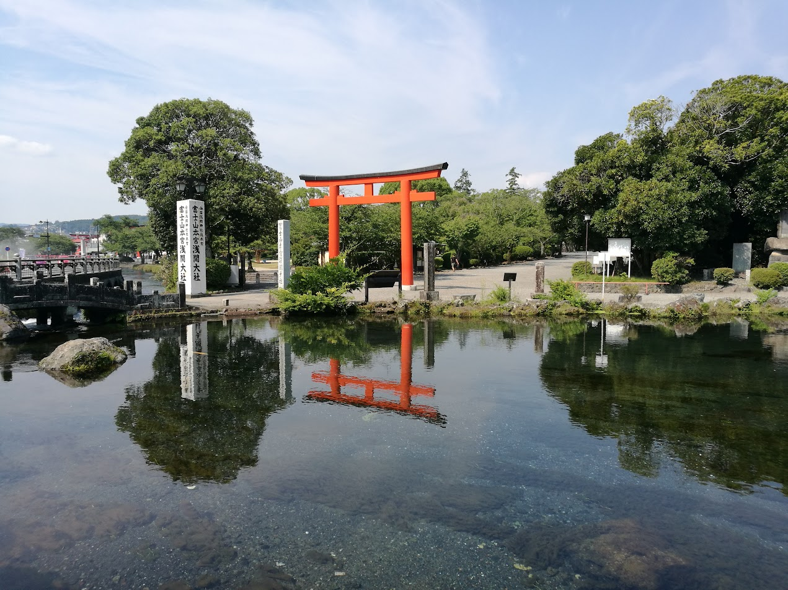

Om Ashihara
I Ashihara Karate-systemet, som er udviklet af, nu afdøde, Kancho Hideyuki Ashihara 10.Dan er moderne idrætsteori og -mekanik integreret med de bedste teknikker fra bl.a. den traditionelle karate, kendo og aikido, resulterende i at teknikkerne bliver hurtige og kraftfulde, hvilket er meget vigtigt i en kampsituation - ikke mindst i selvforsvar.
Grund ideerne i dette system er sikkerhed og kontrol; Et sikkert forsvar baseret på cirkulære undvigelser til siderne fremfor konfrontation med modstanderens kraft udgør grundlaget for at kontrollere modstanderen og, om nødvendigt, at indsætte en afgørende teknik. Kancho Ashihara mente ikke at de traditionelle kampsystemer, som han allerede var mester i, var effektive nok og viede derfor sit liv til udviklingen af Ashihara Karate, som sætter én i stand til at besejre en fysisk overlegen modstander igennem brugen af “Sabaki” ; som bedst kan oversættes: kamp-kontrol af modstanderen.
Ikke mindst på grund af sin enestående effektivitet er Ashihara Karate blandt andet brugt til undervisning af politifolk i Japan.
Kancho Hideyuki Ashihara (1944-95) opnåede at blive en levende legende, han åbnede sin første dojo (træningslokale) I en alder af kun 20 år, men vedblev helt indtil sin død at udvikle sit eget logiske system til fuldkommenhed.
I 1980 grundlagde Ashihara Kancho New International Karate Organisation, Ashihara Kaikan med hovedskole i Matsuyama på øen Shikoku. og lod dermed Ashihara Karaten udbrede sig og I løbet af kort tid blive det populæreste karatesystem I Japan. Idag findes der Ashihara karate skoler overalt i verden (alene i Danmark omkring 20 klubber). Intet andet karatesystem har på så kort tid opnået en tilsvarende udbredelse og popularitet. På trods af den enorme udbredelse er hver enkelt klub ud over hele verden direkte tilknyttet hovedskolen I Japan og Ashihara Karate Aarhus’ bedste instruktører er uddannede dér.
Læs mere om karattens historie“ The answer lies where the hand reaches “
- Kancho Ashihara
Bæltegrader
Ashihara Karate anvendes et bæltesystem for at markere og anerkende elevens færdigheder og fremskridt i træningen. I Asihara karate findes der 10 Kyu. grader, 3 Dan grader og æresgrader. Man markere den opnåede Kyu graderne markeres med et bælte i tilsvarende farve hvid, rød, blå, gul, grøn og brun. Dan graderne markeres med sort bælte
Hvidt bælte:
Dette er det indledende niveau, hvor elever lærer grundlæggende teknikker, stances og bevægelser. Fokus ligger på at opbygge en solid base og forståelse af karate's fundamentale elementer.
Rødt bælte: (10. Kyu)
Elever begynder at udvikle deres tekniske færdigheder og forbedre deres forståelse af grundlæggende angrebs- og forsvarsteknikker. Der lægges også vægt på at forfine kraft og kontrol. (Ved 9. Kyu. Er der blå snipper på bæltets ender)
Blå bælte: (8. Kyu)
Nu fokuseres der på at kombinere teknikker i mere komplekse mønstre. Elever begynder at arbejde på hurtigere og mere præcise bevægelser samt forbedre deres reaktionsevne. (Ved 7. Kyu. Er der gule snipper på bæltets ender)
Gul bælte: (6. Kyu)
Dette er et niveau, hvor eleverne skal vise en forståelse for avancerede teknikker og begynde at integrere dem i mere komplekse kampscenarier. Der lægges også vægt på at forbedre kondition og styrke. (Ved 5. Kyu. Er der grønne snipper på bæltets ender)
Grønt bælte: (4. kyu)
På dette niveau skal eleverne demonstrere en høj grad af teknisk dygtighed. Deres kampstrategi og evne til at tilpasse sig forskellige modstandere bliver vigtigere. Fokus på avancerede kata og kumite-teknikker intensiveres. (Ved 3. Kyu. Er der brune snipper på bæltets ender)
Brun bælte (2. Kyu):
Dette er det sidste elevniveau, før man opnår mesterniveauet. Eleverne finpudser deres teknikker og forbereder sig på det sorte bælte. Der lægges også vægt på dybere forståelse af filosofien bag Ashihara Karate. (Ved 1. Kyu. Er der sorte snipper på bæltets ender)
Sort bælte (1. Dan og derover):
Sort bælte repræsenterer ikke kun teknisk dygtighed, men også en forpligtelse til at forstå og udforske karate som en livslang rejse. Der er flere dan-grader (mesterniveauer) inden for sort bælte, der repræsenterer stadig højere færdigheder og engagement i karate-disciplinen. Disse grader vises med mængden af gule snipper på bæltets ende.